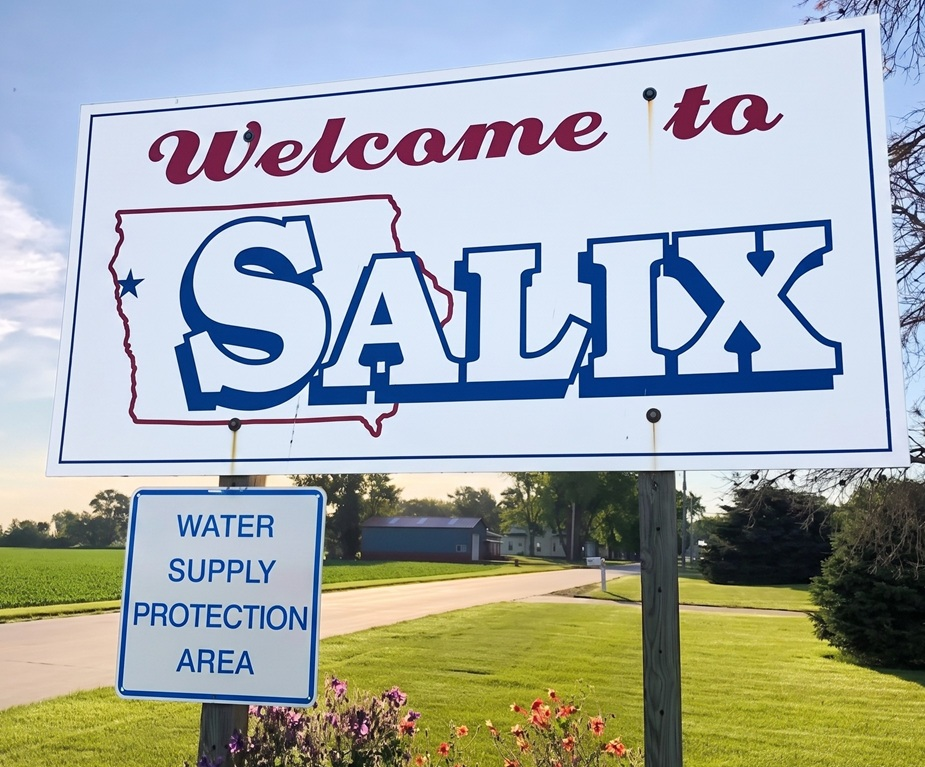

Salix, Iowa Data Center

Protecting the future and heritage of our Siouxland community.
Salix Deserves Guarantees, Not Tacit Assurances
The Siouxland deserves transparency, clean water, no noise, and fair benefits and wages.
The Salix data center is a proposed technology infrastructure project slated for 900 acres of annexed farmland just south of Sioux City, Iowa. The development has become a focal point of community discussion regarding land use, resource allocation, and the local impact of the artificial intelligence boom.
Project Specifications
📍 Location & Scale
Located in Salix, Iowa (Woodbury County). The footprint covers 900 acres of recently annexed agricultural land.
🤝 Key Partners
Partners include MidAmerican Energy and Google, who has been identified as the potential primary customer.
🚧 Current Phase
Land has been annexed, but development is pending a formal rezoning approval before any construction can begin.
Recent Updates & Community Response
On August 20, 2026, the Salix City Council voted 3-2 against a proposed one-year moratorium on data center developments. Proponents of the moratorium requested a pause to thoroughly study the potential strain on electricity, water, and local infrastructure.
While some local leaders emphasize the necessity of opening conversations with potential developers to see what economic benefits might be brought to the community, Woodbury County has filed a legal challenge against the city's initial land annexation. No construction can move forward until the rezoning process is fully finalized.